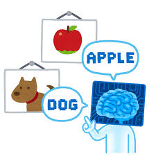
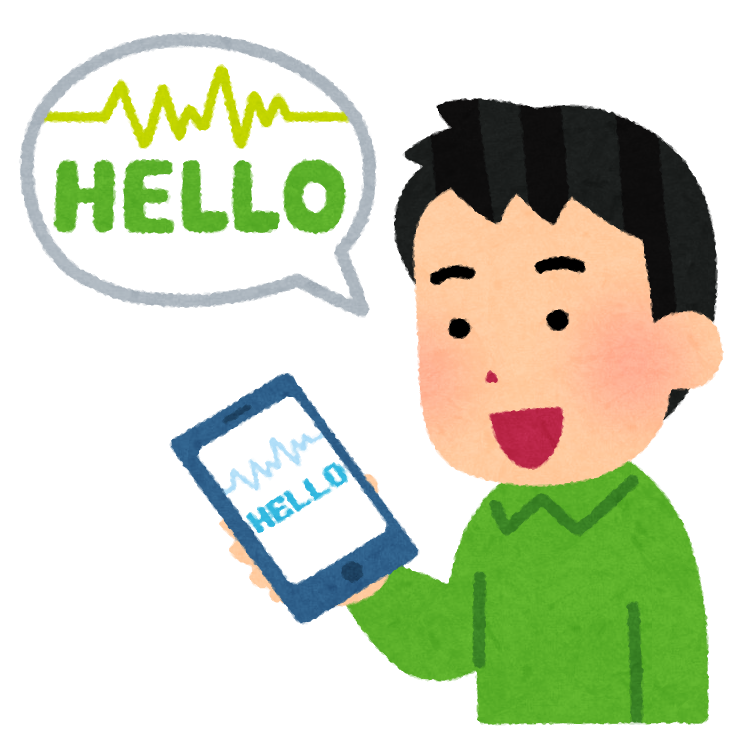

Hello, I'm
佐藤 陽太
日本大学・理工学部 応用情報工学科
学生時代に力を入れたこと（計画実行力）
-
課題と目標: 応用情報工学科に在籍する中、苦手だった物理系科目を、予習・復習を徹底することで克服し、基礎を固めることを目標としました。
-
計画的な行動: 難解な箇所を予習で明確化し、授業後に演習で理解度を確認するサイクルを継続。地道な努力を計画的に実行しました。
-
成果と学び: 物理系科目で優秀な成績を収め、学業全体の向上に繋がりました。困難な目標達成には、**地道な努力の継続と計画実行力**が不可欠であることを学びました。
興味のある技術

画像認識 (Image Recognition)
深層学習（特にCNN）を用いた画像分類や物体検出技術に強い関心があります。AIが視覚情報を理解し、現実世界の問題解決に応用できる可能性に魅力を感じています。特に、医療画像解析や自動運転への応用に関心があります。

自然言語処理 (NLP)
TransformerモデルやLLM（大規模言語モデル）の仕組みに興味があり、機械翻訳や文章要約、感情分析などの分野で、人間とAIのコミュニケーションを円滑にする技術を深く学びたいと考えています。日本語特有の表現解析に挑戦したいです。